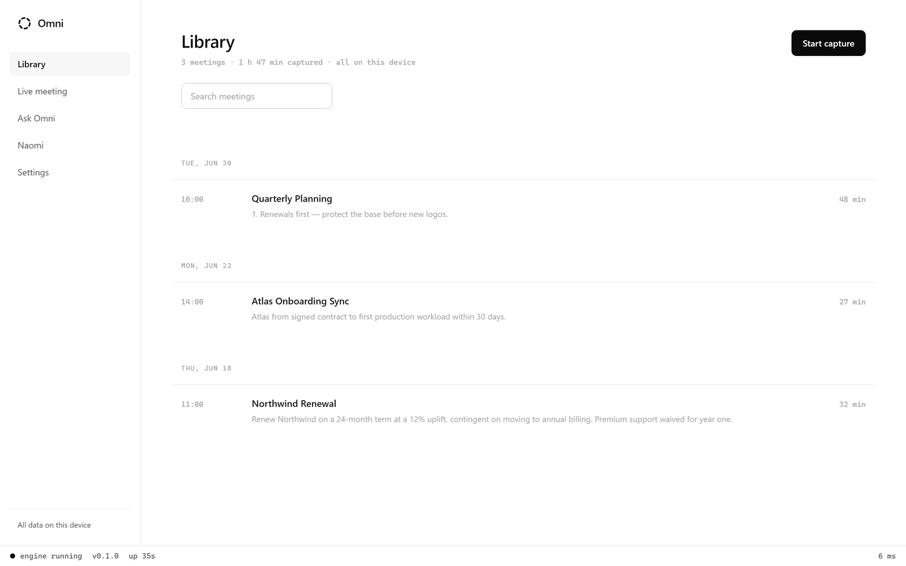
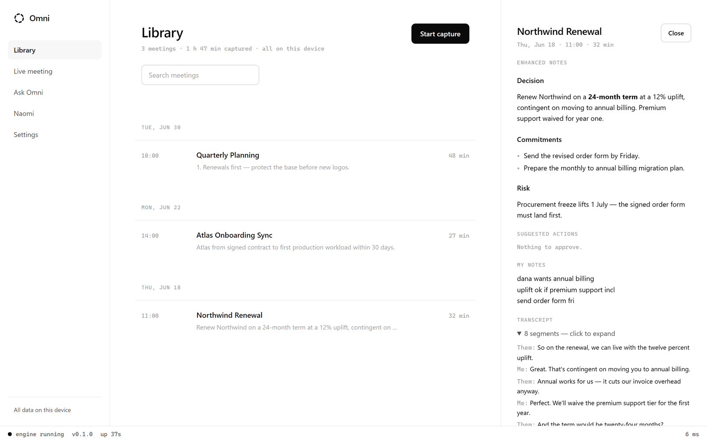
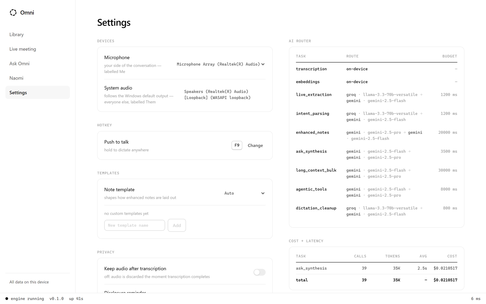
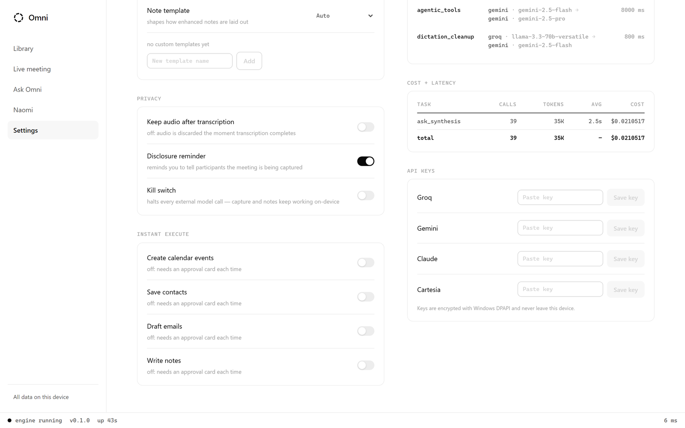
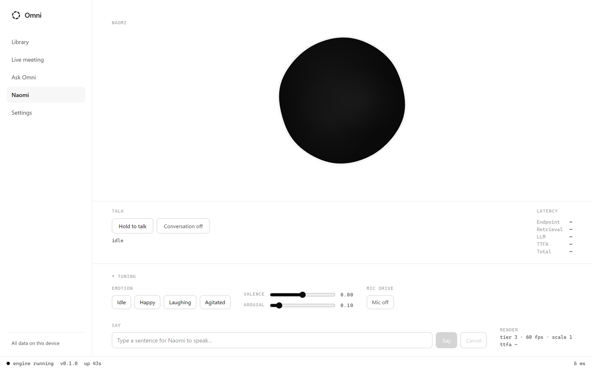
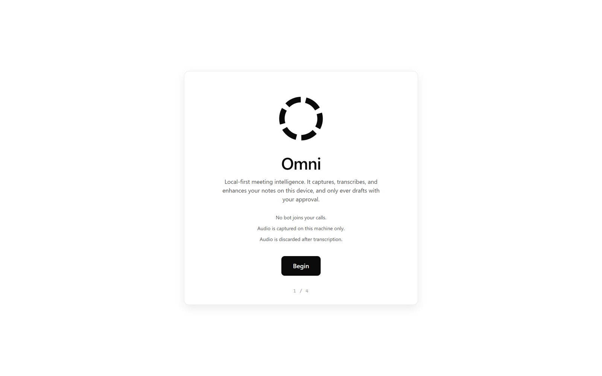
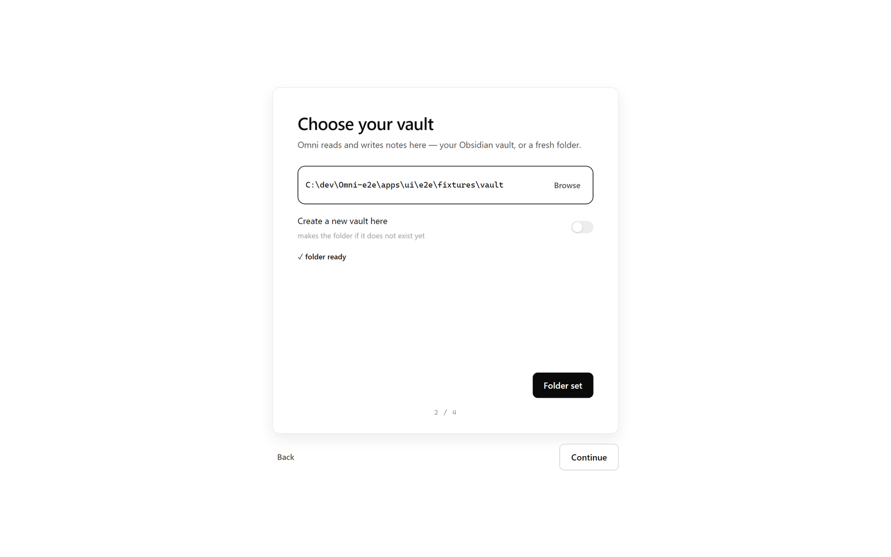
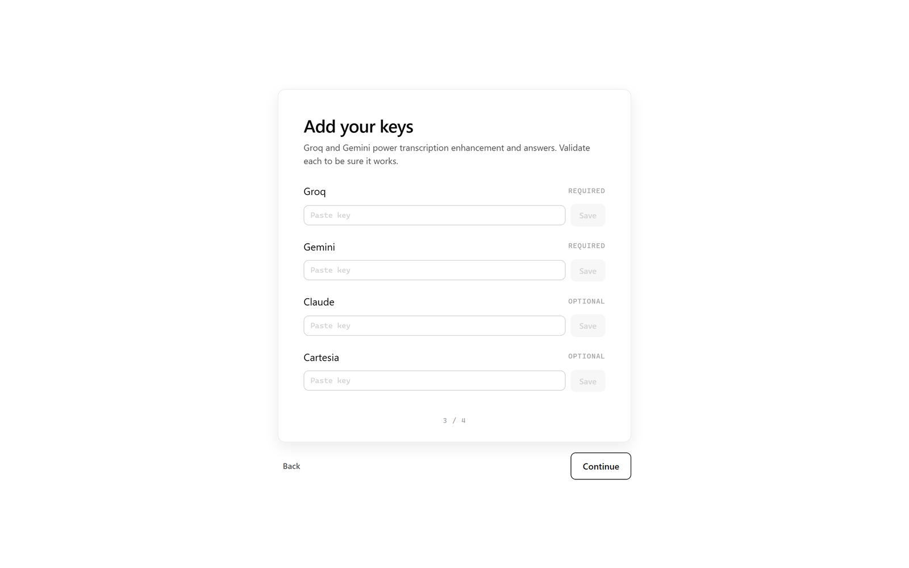
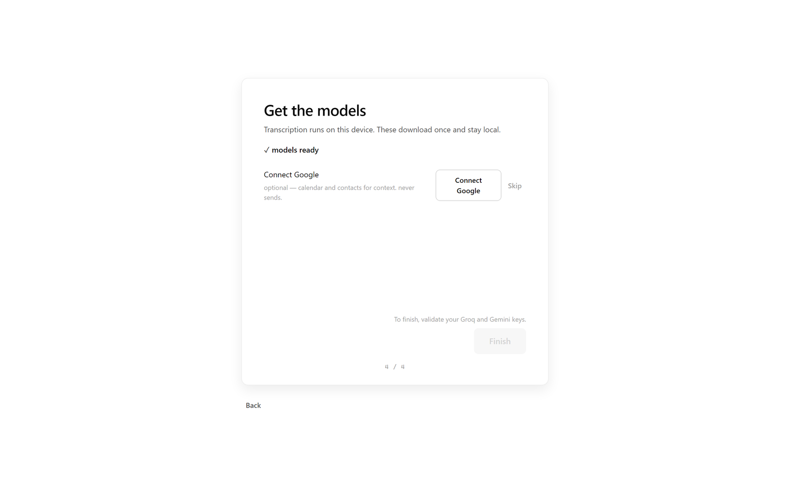

The meeting companion that never joins the call.
Omni runs entirely on your Windows machine. It captures meetings without a bot, transcribes on-device, turns your rough notes into clean ones, and answers from your own vault. Nothing leaves your machine unless you send it.
No bot joins your calls · Audio discarded after transcription · Zero telemetry
Every meeting, quietly captured.
No bot in the call, no invite, no upload. Omni records two clean, labelled streams — the room over WASAPI loopback and your microphone — so it hears everyone, and keeps working through headphones where single-stream capture hears nothing.
- Them and Me stay separate, so notes and transcripts always know who said what.
- Starts on your command — it never auto-joins and never dials in.

Your rough notes, made clean — and still yours.
Omni fuses your in-meeting scribbles with the transcript into structured notes: decisions, commitments, risks. Your own words stay primary and untouched; the AI settles its lines around yours, inside clearly-marked managed regions it can rewrite and you can trust.
- Decision, commitments, risk and suggested actions, drawn straight from what was said.
- When there's nothing to do, it says so — no invented follow-ups.

Ask anything. Every answer cites the exact line.
A local index over your Obsidian vault and every past transcript answers questions during and after a call. Each claim carries an inline citation that resolves to a real note and line range — never a hand-wave, never a hallucinated source.
- Retrieval runs in single-digit milliseconds, on-device.
- Answers come from your vault only — nothing else is consulted.
One router, the right model, every call on the ledger.
Transcription and embeddings run on-device. Everything else is routed to the provider that fits the task — fast work, long-context bulk, or agentic tool use — each with a budget and a fallback. A running cost-and-latency ledger shows exactly what every call spent.
- Groq for instant work, Gemini for long context, Claude for agentic synthesis.
- Tokens, latency and cost, tallied per task — no surprise bills.

Nothing runs without your say-so.
Omni proposes calendar events, contact saves and email drafts — and waits. Each action arrives as a card you approve, edit or dismiss, and email is draft-only: it never sends. Every approved action lands in an append-only audit log.
- Bring your own keys — sealed with Windows DPAPI, never written in plaintext, never logged.
- A kill switch halts every external call while capture and notes keep working offline.

Push to talk, into any app.
Hold a global hotkey and speak; Omni cleans the transcript and injects it wherever your cursor is. It keeps the raw text too, so a bad cleanup can never quietly rewrite what you actually said.
A voice you can talk to, hands-free.
Naomi is a voice mode with a reactive black-water visual that answers from your vault and dispatches the same approval-carded actions — spoken, not typed. Ask a question mid-task and keep your hands on the work.
- Same retrieval, same citations, same approvals — just by voice.
- Renders at 60fps on-device; her latency is measured, not guessed.

Private by construction, not by policy.
Local-first isn't a setting you switch on — it's how Omni is built. The defaults protect you; there's nothing to opt out of.
On-device transcription
Silero VAD gates a streaming Parakeet-TDT model on your GPU. Speech never leaves the machine to be turned into text.
Audio discarded
Recordings are deleted the moment transcription completes. Keeping them is an explicit opt-in, off by default.
Keys sealed with DPAPI
Your API keys are encrypted per-user with Windows DPAPI, never stored in plaintext, and never written to a log.
Email is draft-only
Omni drafts follow-ups for you to review. It never sends on your behalf — and every executed action is logged.
Zero telemetry
No analytics, no phone-home, no usage pings. There is no server to talk to.
Kill switch
One flag halts every external model call. Capture, transcription and your notes keep working, fully offline.
Ready in about two minutes.
Point Omni at your vault, paste your keys, pick your models. Everything from there runs on your machine.

No bot, on-device, drafts only with your approval.

Choose the Obsidian vault Omni reads and writes.

Paste your keys — sealed on-device with DPAPI.

Confirm the on-device transcription and index models.
Your meetings, understood — and kept to yourself.
Free and open source. Runs on your Windows machine, answers from your own notes, and sends nothing you didn't approve.
Windows 10 / 11 · MIT licensed